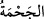

Yâni kendi elinizle taştan ve ağaçtan yonttuğunuz şeye mi tapıyorsunuz? “Oysa ki sizi ve
yapmakta olduklarınızı” yani putlarınızı ve diğer şeyleri “Allah yarattı, dedi.” Bu
cümle “__WORD__ kelimesindeki “__WORD__”dan haldir. İnkar ve sitemi te’kid etmektedir. Zira
onların yonttukları putların cevher ve maddesi Allah Teâlâ’nın yaratması ile vücuda
gelmiştir. Putlara şekil verme işi onlara ait olsa da ancak bu da Allah Teâlâ’nın bu
konuda onlara kudret vermesi ve gerekli olan sebep, sayı ve benzeri unsurları Allah
Teâlâ’nın yaratmasıyladır. Buna göre bir şeyin hem doğrudan Allah Teâlâ’nın yaratması
hem de onların mâmûlü olması lazım gelmez. Âyetin mânâ ve muhtevasından ortaya
çıkan şudur: Ehl-i sünnet ve’l-cemaate göre bütün işleri Allah yaratır. Kul kesb eder,
kazanır. Yani Allah hâlık, kul kâsibtir. Sonuçta sevap ve azap durumu da bu kesb ve
kazanmayla ilgilidir. Molla Câmî der ki:
Bizim fiilimiz ister kötü ister iyi olsun
Bir bir O’nun tarafından yaratılmıştır
İyi ve kötü gerçi kazânın/kaderin gereğidir
Kötüye O’nun rızası yoktur, iyiye vardır.
Nemrud ve seçkin adamları şöyle dedi:
97. Onun için bir bina yapın ve derhal onu ateşe atın! dediler.
“Onun için bir bina yapın...” İbrâhim’i yakmak için bir bina yapın, onu odun ile
doldurun ve ateşe verin. Taberî’nin zikrettiğine göre Süheylî et-Ta’rîf’te der ki: Onlara
bu sözü söyleyen kişi Fars bedevilerinden Heyzen isminde bir adamdır. Bu adam şu
hadis-i şerifte konu edilen kişidir. Hz. Peygamber (s.a.) şöyle buyuruyor: “Adamın biri
giydiği bir elbise içerisinde böbürlenerek yürüyordu da yerin dibine geçirildi.
Kıyâmet gününe kadar da yere batmaya devam edecek.”[213]
“Ve derhal onu” şiddetli yanan “ateşe atın! dediler.”
İbn Abbâs (r.a.)’dan yapılan rivâyete göre o der ki: Nemrut ve adamları İbrahim
(a.s.)’ı yakmak için 30 zira’ yüksekliğinde 20 zira’ genişliğinde taştan bir bina yaptılar.
Binanın içini odunla doldurdular. Binayı tutuşturup İbrahim (a.s.)’ı oraya attılar.
“__WORD__ kelimesi, “__WORD__ veya “__WORD__ kökünden gelir. Ateşin iyice tutuşup
alevlenmesidir. “__WORD__ kelimesindeki “__WORD__” takısı ise muzâfun ileyh’ten bedel olarak
gelmiştir. Yani o binanın ateşine atın demektir.